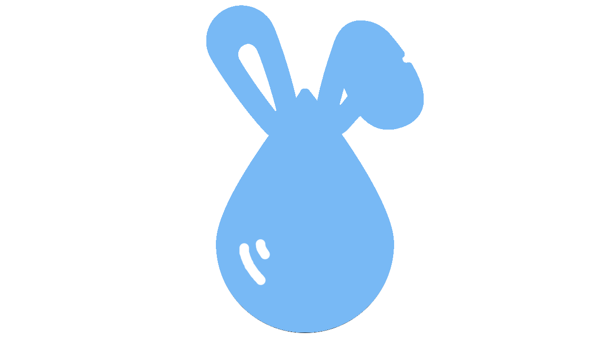

Water Bip
1
Conheça um pouco sobre nós

objetivo

Público-alvo

Funcionamento
Componentes Usados
Buzzer
Sensor de Boia
Jumpers
Resistores
Arduino Uno
Protoboard
Conector de Bateria
Bebedouro p/ roedores
Bateria 9v
Saiba Mais
Porque usar o Water Bip
Nosso Diferencial
Sabemos como a rotina de todos pode ser moveimentada nos dias atuais e buscamos ajudá-los a não esquecer de seus pets.Com isso em mente visamos fornecer uma alternativa para a possivel distração das tarefas geradas pela rotina, permitindo que você ainda dê atenção aos seus pets e evitando que esqueça de limpar e trocar sua água.
Pesquisas Feitas
- Curto-Circuito
- Como usar Buzzer no Arduino?
Participantes
Murillo Kauê
Rafael Capovilla
Gustavo Rocha
Guilherme Marcel
Navegue de novo
Início
Sobre nós
Componentes
Porque usar?
Pesquisas feitas